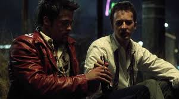
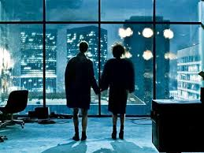
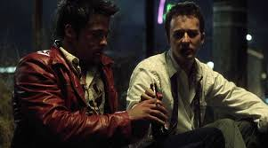
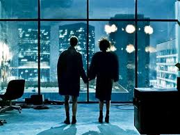

Бойцовский клуб
Краткое содержание: Обычный офисный работник страдает от бессонницы, пока не находит способ изменить свою жизнь благодаря созданию подпольного бойцовского клуба.
 



| Год | Страна | Жанр | Режиссёр |
|---|---|---|---|
| 1999 | США | Драма, триллер | Дэвид Финчер |